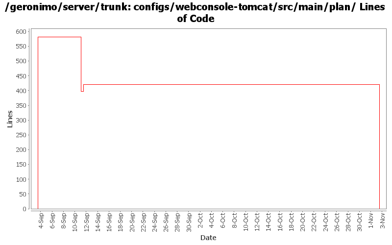

[root]/configs/webconsole-tomcat/src/main/plan

| Author | Changes | Lines of Code | Lines per Change |
|---|---|---|---|
| Totals | 4 (100.0%) | 1002 (100.0%) | 250.5 |
| djencks | 3 (75.0%) | 1002 (100.0%) | 334.0 |
| prasad | 1 (25.0%) | 0 (0.0%) | 0.0 |
GERONIMO-3565. Configs distributed amongst framework/configs and plugins
0 lines of code changed in 1 file:
Undo breakage from previous commit
23 lines of code changed in 1 file:
Clean up a lot more configs so geronimo-plugin.xml is reasonable. Make use of local maven repo more likely to work. Trim framework down to actual minimal size.
398 lines of code changed in 1 file:
GERONIMO-3330 GERONIMO-3453 Use the new plugin schema Paul came up with. Use jaxb for geronimo-plugin xml handling. Modify the car-maven-plugin to generate geronimo-plugin.xml and explicitly specify the dependencies for the plan in pom.xml. This introduces several more jaxb libraries in lib which I hope can be removed again. Also the console plugin handling is barely working.
581 lines of code changed in 1 file: